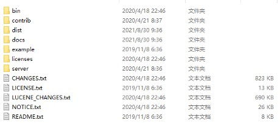

Lucene原理分析
一、Lucene介绍
数据查询
121顺序扫描查询:2 按照顺序对文档进行扫描查询, 效率比较低, 类似于全文遍历. 3
4全文检索: 5 扫描文章中的每一个词, 对每一个词建立一个索引, 指明该词在文章中出现的次数和位置, 当用户查询时, 检索程序就根据事先建立的索引进行查找(类似通过目录查找). 基本思路就是将非结构化数据中的一部分信息提取出来, 重新组织, 使其变得有一定结构, 从而达到搜索相对较快的目的. 6 这部分从非结构化数据中提取出重新组织的信息, 我们称之索引. 这种先建立索引, 再对索引进行搜索的过程就叫全文检索(Full-text Search).7
8正排索引:9 以指文档ID为key, 表中记录每个关键词出现的次数位置等, 查找时扫描表中的每个文档中字的信息, 直到找到所有包含查询关键字的文档. 缺点是能够查找到所有包含关键字的文档, 当数据量非常大时根本无法实时筛选出文档. 10 11倒排索引(Inverted Index): 12 将关键词单独存储在索引中, 记录关键词所在文档中的位置以及出现的次数, 来快速锁定文档列表. 由单次词典和倒排文件组成.Lucene介绍
151Lucene介绍:2 Lucene是java写的高性能|可伸缩的全文检索引擎工具包, 可以嵌入到各种应用中实现全文检索. Butch;Solar;ES都是通过Lucene实现的.3
4Lucene特点:5 -> 高性能 稳定: 每小时可以检索150G以上的数据,对堆内存要求只需要1M.6 -> 高效 准确: 范围搜索返回结果准确.7 -> 跨平台: 纯java便携, 提供多语音client8 9Lucene模块结构介绍:10 -> index模块主要负责索引的创建,里面有IndexWriter.11 -> search模块主要负责对索引的搜索.12 -> QueryParser主要负责语法分析.13 -> Document相当于一个要进行索引的单元, 任何可以想要被索引的文件都必须转化为Document对象才能进行索引.14 -> analysis模块主要负责词法分析及语言处理而形成Term.15 -> storage模块主要负责索引的读写.Lucene Field介绍
101Lucene Field介绍:2 Lucene是以Document为存储单元的, 对象中相关的属性值存放在Field中, Field是文档的域, 包括Field名和Field值两部分, 一个文档可以包括多个Field. Document只是Field的一个载体,Field值为索引内容即搜索内容.3
4Lucene Field属性:5 -> tokenized: 是否分词, 是, 作分词处理, 将Field值进行分词, 分词的目的是为了索引; 否, 不做分词处理.6 -> indexed: 是否索引, 是, 进行索引, 将Field分词后的词或者整个Field值进行索引; 否, 不索引, 该域的内容没办法搜到.7 -> stored: 是否存储, 是, 将Field值存储在文档中, 通过document可以获取到; 否, 不存储Field值.8 -> String: 字符串类型, 不分词, 作为一个整体进行索引(keyword).9 -> Text: 文本类型, 分词并且索引.10 -> Long: 数值, 分词并且索引.索引创建和搜索流程
141Lucene索引创建流程2 01. 采集原文数据(来源爬虫|网络|DB类似的).3 02. 创建文档对象, 进行词法分析语言处理, 将原文档传给分词器(Tokenizer)形成一些列词(Term).4 03. 索引创建, 将得到的词(Term)传给索引组件(Indexer)形成倒排索引结构,索引的目的是为了搜索,最终只搜索被索引的词汇单元从而找到文档(Document).5 04. 通过索引存储器将索引写入磁盘.6
7Lucene搜索流程8 01. 用户输入查询语句.9 02. 对查询语句经过词法分析和语言分析得到一系列词(Term).10 03. 通过语法分析得到一个查询树.11 04. 通过索引存储将索引读到内存.12 05. 利用查询树搜索索引, 从而得到每个词(Term)的文档列表, 对文档列表进行交|差|并得到结果文档. 13 06. 将搜索到的结果文档按照对查询语句的相关性进行排序.14 07. 返回查询结果给用户.二、Lucene原理
索引存储结构
251Index:2 -> 一个目录一个Index, 在Lucene中一个索引放在一个文件夹中.3 -> 同一个文件夹中的所有的文件构成一个Lucene索引.4
5Segment:6 -> 一个Index包含多个Segment, Segment之间是独立的, 添加新的Docment可以生成新的Segment, 不同的Segment可以进行合并.7 -> 在Document写入的时候性能损耗最大, Segment就可以控制Document写入速度. 默认写10个Document会生成一个Segment, 10个Segment会进行合并. 相关属性:8 -> MergeFactory: 控制segment合并的频率和大小(默认10).9 -> MaxMergeDocs: 限制每个segment中包含的文档数(默认Int32.MaxValue).10 -> MinMergeDocs: 当内存中的文档达到多少的时候再写入segment(默认10.11
12Document:13 -> Document是建Index的基本单位, 不同的Document是保存在不同的Segment中的, 一个Segment可以包含多个Document. 14 -> 新添加的Document是单独保存在一个新生成的Segment中, 随着Segment的合并, 不同的Document合并到同一个Segmennt中.15
16Field:17 -> 一个Document包含很多Field.18 -> 不同Field的检索方式可以不同.19
20Term:21 Term是Index的最小单位, 是经过词法分析和语言处理后的字符串. 22
23Lucene索引结构中既保存了正向信息, 也保存了反向信息.24 -> 正向信息: Index –> Segment –> Document –> Field –> Term25 -> 反向信息: Term –> Document词典数据结构
281思考:2 为啥Lucene在大数据量下搜索快?3解决:4 -> 底层的倒排索引存储结构.5 -> 词典的索引结构, 使得查询关键字的时候速度快. 6
7词典常见的数据结构:8 -> 排序数组: 使用二分查找, 不平衡.9 -> hash表(HashMap/TreeMap): 性能高, 内存消耗大(原始数据的三倍). 10 -> B Tree11 -> B+Tree12 -> SkipList: 可快速查找词语, 在Lucene;redis;Hbase等均有实现(类似TreeMap结构).特别适合高并发场景.13 -> Trie: 适合英文词典, 如果文档中存在大量没有公共前缀字符串且, 如果使用Trie树将非常消耗内存.14 -> DoubleArrayTrie: 适合做中文词典, 内存占用小, 很多分词工具均采用此种数据结构.15 -> Ternary Search Tree: 三叉树, 每一个node有3个节点, 兼具省空间和查询快的优点.16 -> Finite State Transducers (FST): 一种有限状态转移机, Lucene4有开源实现, 并大量使用.17
18Tire优缺点:19 -> 优点: 大限度的减少无谓的比较, 查询效率比哈希高.20 -> 缺点: 空间换时间, 利用字符串的公共前缀来降低查询时间的开销已达到提高查询的目的. 空间消耗比较大.21
22跳跃表优缺点:23 -> 优点: 结构简单;跳跃间隔;级数可控.24 -> 缺点: 模糊查询支持不好.25
26FST优缺点:27 -> 优点: 内存占用率低, 压缩率一般在3倍~20倍之间;模糊查询支持好;查询快.28 -> 缺点: 结构复杂;输入要求有序;更新不易.Lucene打分公式:

121参数说明:2 -> score(q,d): 文档d对查询q的相关性得分.3 -> coord(q,d): 协调因子, 一次搜索可能包含多个搜索词, 而一篇文档中也可能包含多个搜索词, 此项表示, 当一篇文档中包含的搜索词越多, 则此文档则打分越高.4 -> queryNorm(q): 计算每个查询条目的方差和, 使得不同的query之间的分数可以比较.5 -> t: Term，这里的Term是指包含域信息的Term, 也即title:hello和content:hello是不同的Term.6 -> tf(t in d): Term t在文档d中出现的词频一般来说tf越大得分越高.7 -> idf(t): Inverse Document Frequency 逆文档频率Term t在几篇文档中出现过值大得分低.8 -> norm(t, d): 标准化因子, 是字段长度归一值, 与检索时字段的Boost(如果存在)相结合.9 -> 各类Boost值:10 --> term boost: 查询语句中每个词的权重, 可以在查询中设定某个词更加重要.11 --> document boost: 文档权重, 在索引阶段写入文件, 表明某些文档比其他文档更重要.12 --> field boost: 域的权重, 在索引阶段写入文件, 表明某些域比其他的域更重要.query Norm(q)计算公式:

norm(t, d)计算公式:
<img src=".assets/008-4720738.jpg" alt="008" style="zoom:1
三、Lucene优化
优化
231布隆过滤器使用:2 -> 问题: 有些单词不在索引库里, 但还需要进索引库查询,发起不必要的IO请求.3 -> 解决: 使用布隆过滤器, 预先判断单词是不是在该索引库里. 布隆过滤器原理很简单, 对一单词哈希, 并映射到相应bit, 设置为1, 判断时同样做哈希,并去相应bit位取值, 若为1, 则可能存在, 进库查询, 若为0. 则肯定不存在, 不需进库查询.4 5IndexWriter的参数优化:6 -> 修改IndexWriterConfig配置.7 -> setMaxBufferedDocs属性: (默认10)控制写入一个新的Segment前内存中保存的Document的数目, 设置较大的数值可以加快建索引速度, 但会消耗更多的内存.8 -> maxMergeDocs属性: (默认值是int.maaxValue)控制一个Segment中可以保存的最大Document数目, 这个参数设置为比较大的数值可以提高检索速度.9 -> mergeFactor: (默认10)用于控制索引Segment的数量, 当大于设置的数量时索引将合并成一个大片段. 参数越大, Segment合并开销越小, 搜索速度更慢.10 11分词器选择:12 -> 不同的分词器分词效果不同, 所用时间也不同.13 -> StandardAnalyzer切分词速度快, StandardAnalyzer对中文支持不好. 14 -> IKAnalyzer准确率高, 支持停用词典和扩展词典, 可以通过调整两个词典中的内容, 来提升查询匹配的精度. 但分词效率低.15
16屏蔽打分/排序机制:17 -> 如果业务不需要打分排序机制则可以屏蔽打分排序机制.18 -> indexSearcher.setSimilarity(indexSearcher.getSimilarity(false));19
20选择合适的对象存放索引库:21 -> SimpleFSDirectory: 写RandomAccessFile;读RandomAccessFile;特点-简单实现,并发能力差.22 -> NIOFSDirectory: 写FileChannel;读FSIndexOutput;特点-并发能力强.23 -> MMapDirectory: 写内存映射;读FSIndexOutpur;特点-读操作基于内存.建议
71-> 关键词区分大小写: OR AND TO等关键词是区分大小写的, lucene只认大写的, 小写的当做普通单词.2-> 读写互斥性: 同一时刻只能有一个对索引的写操作, 在写的同时可以进行搜索.3-> 文件锁: 写索引的过程中强行退出将在tmp目录留下一个lock文件, 使以后的写操作无法进行, 可以将其手工删除.4-> 时间格式: Lucene只支持一种时间格式yyMMddHHmmss, 所以你传一个yy-MM-dd HH:mm:ss的时间给lucene它不会当作时间来处理的.DateTools.dateToString(new Date(), DateTools.Resolution.DAY)可以把日期处理成yyMMdd.5-> 设置boost: 有些时候在搜索时某个字段的权重需要大一些, 例如你可能认为标题中出现关键词的文章比正文中出现关键词的文章更有价值, 你可以把标题的boost设置的更大, 那么搜索结果会优先显示标题中出现关键词的文章.6 Query termQuery = new TermQuery(new Term("name","lucene"));7 BoostQuery query =new BoostQuery(termQuery, 3.5f);